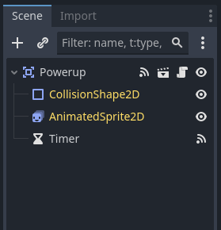
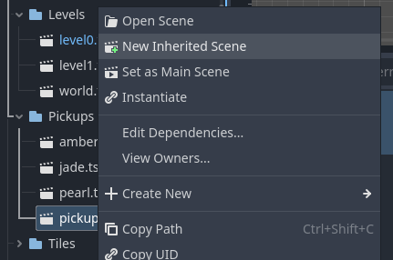
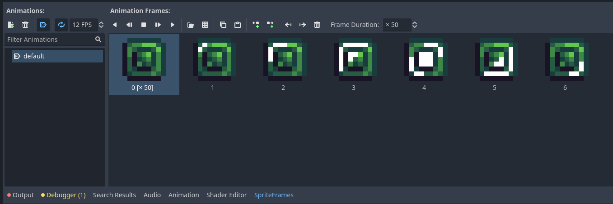
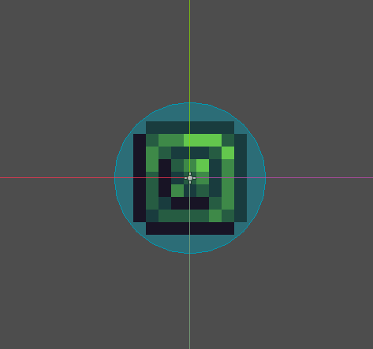
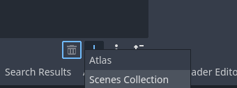
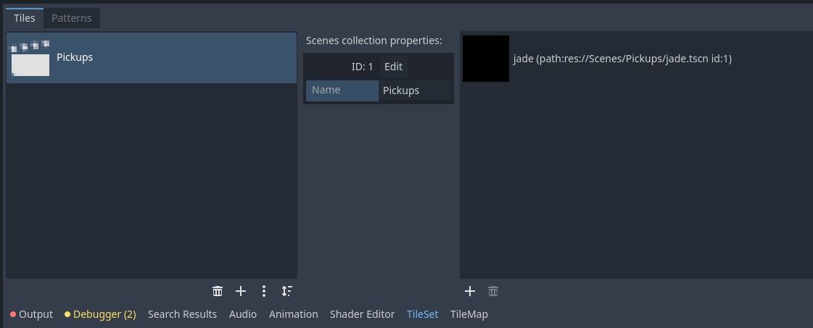

Collectables
IMPORTANT! This module requires the Trigger Setup module to be completed first!
In this module we will be creating pick-ups, objects the player can run into for some benefit. Many other modules will use this functionality, but for now we will simply add gems the player can pick up.
Creating the Pickup Scene
Due to the fact so many different modules will require the player to be able to pick something up, we will be making a parent scene first and foremost with the basic pickup functionality. To get started, create a new scene. For the root node, select an Area2D node and rename it to Pickup. Then, create two new child nodes for the Pickup node, one being an CollisionShape2D and another being an AnimatedSprite2D. The scene should then look like this:
Note that we are not adding a collision shape nor sprite frames to our Pickup scene. This is so that each inherited scene can have it's own unique animations and collision shapes!
Next, we need to set the Pickup node's collision layers and masks. In the inspector while you have the Pickup node selected go under the collision section. We will set the layers to be empty and the mask to be our trigger layer, like so:

Creating the Pickup Script
Creating the script for pickups is pretty simple. First select the Pickup node and add a new script. At the top of the script, above the extends Area2D we will set a new Class Name by adding class_name Pickup. By adding a new class name, we effectively create a new node type that other scripts can inherit from. So later when we create new types of pickups, we don't need to copy any code we already wrote!
class_name Pickup
extends Area2DNext we want to create a new function called onPickup. For it's arguments we want to set it to _area and inside of the functions body all we want to put is to call the queue_free() method, like so:
func onPickup(_area):
queue_free()Note that we aren't actually using the _area argument right now. It is there for other modules, but if you end up not using it you can delete it if you choose.
Finally, we want the pickup to actually detect when the player's trigger collider, well, collides with it. Select the Pickup node, go to the node tab in the inspector and under signals select area_entered. Connect it to the pickup script. In the new function call the onPickup function we created, passing area as the argument.
func _on_area_entered(area):
onPickup(area)Make sure to save the Pickup scene!
Creating the Jade Pickup
Of course, right now we don't have any pickup for the player to interact with. To remedy this we need to create a new inherited scene. In the filesystem right click the pickup scene and select new inherited scene.
In the new scene, rename the Pickup node to Jade, then select the AnimatedSprite2D node. In the inspector create a new sprite frames and import the jade sprite from the Pickups folder in your VGDC-2024 Assets folder.
If you are not taking this course in person, you can download the assets Here
In the sprite frames, import the jade sprite as a sprite sheet, set it to autoplay on load, set the play speed to 12 fps and set the first frame's duration to 50 like so:
Next, we need to add a collision shape to our jade pickup. Select the Collisionshape2D node and in the inspector create a new circle shape. Resize it to fit the sprite.
And that is the pickup done! you can save the scene and drag and drop it into your world scene as per usual, though you may notice a problem: adding many pickups quickly begins to clutter the world's scene tree. To fix this we can use another function of the Tilemap node.
Creating a Scene Collection
In the world scene, right click the World node and create a new tilemap node as a child node. Name it LevelObjects. In the inspector create a new tileset, then in the tileset tab in the bottom bar press the plus symbol. You will see the option for an atlas (which we already have used) and one for a new scenes collection, select that.
A scene collection is a grouping of scenes as tiles, allowing you to place scenes the same way you do with tiles, as well as neatly organizing them as to not clutter up the scene tree. Make sure to name the scene collection (I will name mine Pickups) then you can drag and drop the jade scene into the large box on the right of the bottom bar.
Go ahead and save the scene, then select the tilemap tab in the bottom bar. You can now place the jade scene in the same way you placed your ground tiles!
Note that you can put as many scene collections and scenes into the LevelObjects tilemap. You can add other pickups, enemies and even the player! Go ahead and try out organizing your level scene with scene collections!
And that is pickups set up! While the jade doesn't do anything right now, in later modules you can add score to it, or simply have it as a way to guide players through the level. Either way, test it out, then move on to another module!